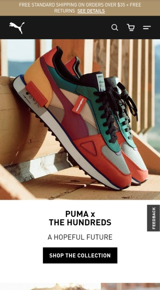

Repetition
BYU Pathway Worldwide
byupathway.org
I really like the way BYU Pathway Worldwide designed their site. The most notable design principle here, to
me, was the use of the color yellow. It repeats throughout the site. It is found in their logo, in the
background, the words, color overlays, it is everywhere. This design principle really brings the entire site
together and helps present a solid message, the message of a worldwide program for everyone.
Proximity
Puma
us.puma.com

I found Puma's mobile site to be very user friendly. I believe this is so because they have used the principle
of proximity well. Everything is clearly defined by their placing on the screen; there is no getting lost. The
logo and nav bar sit at the top at opposite ends. Their products are displayed followed by a short description
and link. This also gives the site a clean look, which helps give great shopping experience.
Contrast
Disney Plus
disneyplus.com
Disney Plus' mobile site is an awesome example of contrast being used right. The solid black background sets
the stage for that contrast. The words are white and easy to read. The links are easy to spot. But, the most
contrast is found between the colorful movie posters and the background. They jump out immediately. The movie
titles are the selling point, they stand out because of this design principle.